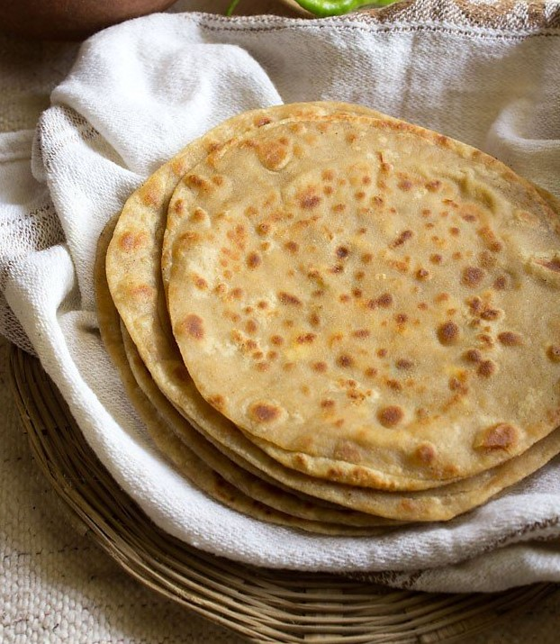

Paneer paratha is a popular Indian flatbread made with whole wheat flour and cottage cheese stuffing.

Ingredients
2 cupsWheat Flour
200 gmsPaneer
3-4 TbspGhee
2 TbspGreen Coriander (finely chopped)
1 tspCoriander Powder
1/4 tspMango Powder
1/4 tspGaram Masala
2Green Chilli (finely chopped)
1/4 tspRed Chilli Powder
To tasteSalt
Preparation
Take wheat flour in a mixing bowl.Add 1/2 tsp salt, 2 tsp ghee to it. Mix well. Add water in small portions and knead a soft dough. 1 tbsp less than 1 cup water is used to knead the dough.Cover and keep the dough aside for 20 to 25 minutes to set.
For stuffing grate panner in a mixing bowl, add spices such as 1/2 tsp salt, 1 tsp coriander powder, 1/4 tsp dry mango powder, 1/4 tsp garam masala.2 finely chopped green chili,1/4 tsp red chili powder and 2 tbsp finely chopped green coriander. Mix well.
When 20 minutes are done, Grease your hands with little ghee,squash the dough a bit.
To make paranthas by the first way, Break a lump from the dough. Make a round dough ball and give peda like shape, coat in dry flour. Roll it out 4 to 5 inch in diameter. Meanwhile put the tawa to heat up.
Place 2 to 3 tsp stuffing over the rolled out parantha,Close the stuffing by lifting from all sides.
Press with palm to spread stuffing evenly, then coat it with dry flour again. Roll it out from the edges,keep thick, 6 to 7 inch in diameter.
Put little ghee on tawa spread evenly, put the parantha to roast on the tawa. Keep the flame medium.Let the parantha slightly roast from beneath until brown spots appear. Roll other paranthas likewise.When parathas have brown spots, flip them, apply ghee on both sides and roast well. Once roasted Lift the parantha and put it over the bowl placed on the plate.
To make paranthas the other way,break the dough lumpMake 2 equal dough lumps, then make a round ball, then gave peda like shape. Coat with dry flour, roll it out 6 to 7 inch in diameter same as chapati. Keep in plate, roll other sheet likewise.
To stuff the parantha, Put some stuffing over the sheet.Leave some space on the edges,grease the edges with water.
Place the parantha over it and press on the edges for both sides to stick.Roll out lightly. Roast same as previous paranthas. Place the roasted paranthas in a plate. Turn off flame. 5 to 6 paranthas can be made with this quantity of dough.